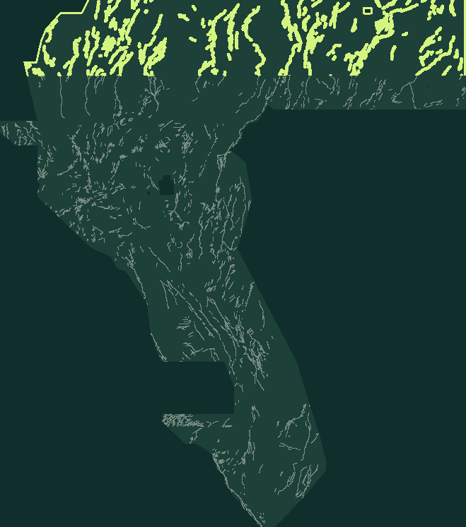

GEMSDOE79 / H79-STEP · RESEARCH TIFF
NEGATIVE VERDICT · OK TO DOWNLOAD, DO NOT SUBMITA research GeoTIFF.
Submission is blocked.
The current card is a format-valid research artifact, not a competition score. Its HOLDOUT-DTI results are inherited from the upstream card and were not rerun in this repository review. The full registry uniqueness comparison was not executed locally; the pinned literal-support witness and the recorded negative gates mean this file is not cleared to submit.
Single band · float32 · EPSG:32611 · 100 m · 3730 × 3292 · values exactly 0 or 1 · no NaN anywhere
Research download only. Uniqueness gate not executable locally (registry cache absent); literal reading is blocked by the universal-support witness. Not cleared for submission. No human inspection is needed to reach this automated rejection.
Read the automated decision and limitations ↗ · Review H33 and historical experiments ↗ · See the unexecuted shortlist ↗

Max-pooled for display only; the GeoTIFF bytes are untouched.
CURRENT RESULT / NOT A LEADERBOARD SCORE
Read the evidence with its limits.
HOLDOUT-DTI is an offline hide-and-recover proxy over withheld catalogue faults. It is not ORGANIZER-CONFIRMED and is not a projected competition score.
Paired HOLDOUT-DTI gain versus uniform
Seed 20: Δ +0.0635, 95% CI [0.043113825515079175, 0.08365929676958951]; n = 11,321 withheld positives.
Seed 30: Δ +0.0698, 95% CI [0.04606936844346141, 0.09057843518957738]; n = 11,342 withheld positives.
The paired gains over uniform do not establish superiority to H33 or organizer performance.
Mechanism and named mimic
Mechanism: 1) D = Euclidean distance to the nearest mapped fault pixel (100 m grid). 2) Local fault-zone complexity = count of catalogue pixels in a 900 m (9 px) window. 3) Surface = annulus_window(D, 200 m-2 km) * complexity, rank-normalised to [0,1] over the footprint. 4) Dots emitted by fixed-budget 3 px Poisson spacing on surface > 0, zero on mapped faults and outside the footprint. Values exactly {0,1}. No DEM, no geophysics, no fitted model, no hidden labels enter the surface.
Non-fault mimic: Pluvial Lake Lahontan shoreline/terrace risers, incised channel banks, roads and mine benches can produce linear steps in the piedmont; these are not faults and are not in the catalogue, so they can mimic the surface but are scored as false positives by the holdout.
Artifact identity (research only)
Unique name, comment and SHA-256, kept for reproducibility. These are not an instruction to upload this file.
Automated gates (no human inspector)
Each line is computed from the written bytes or inherited evidence; a format PASS is not submission clearance.
UNIQUENESS / FAIL-CLOSED
A pinned witness blocks the literal rule.
Certificate SHA-256: ab0a0a62eecf066a82713b09dd49f0f638a91fa3dd81f54cc34ae89afa3872be
The full current registry correlation/overlap comparison is NOT RUN locally. registry rasters are not restored in this checkout (.cache/registry empty); the shared uniqueness gate cannot run locally. A hash-verified universal-support witness would block the literal reading on any nonempty candidate. Not-run is not a pass.
The separate hash-pinned witness covers 5,106,385 of 5,106,385 allowed cells. Under its recorded literal support definition (finite prediction > 0 (inherited literal support rule)), the certificate states that every nonempty candidate set has forward overlap 1.0, above the 0.70 limit. The current run card therefore remains negative and protocol_unique is false.
Partial-halo coverage or a random-overlap expectation alone does not prove every map fails; this stop relies on the separate full-coverage witness and the current protocol's literal definition. Do not silently change that definition in a candidate lane.